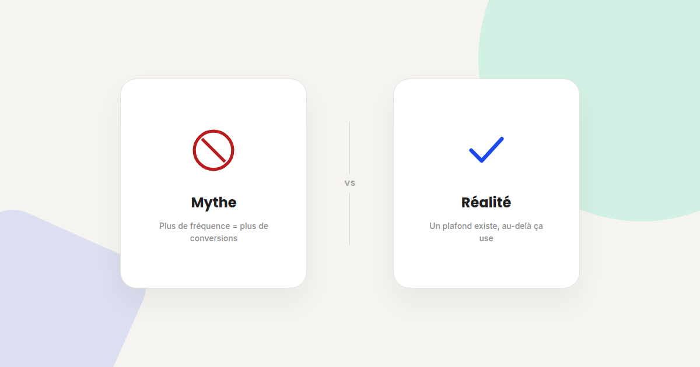
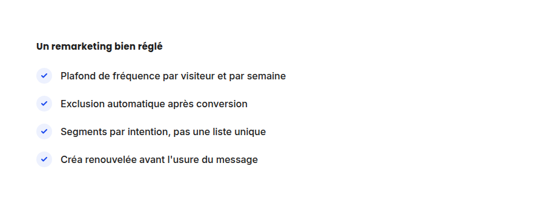

Retargeting : 4 idées reçues qui plombent vos campagnes de remarketing
Le retargeting a la réputation d'être le levier publicitaire le plus rentable — ce qui pousse beaucoup d'annonceurs à l'utiliser sans le régler correctement. Voici les quatre idées reçues qui reviennent le plus souvent dans mes audits, et ce qu'il faut faire à la place.

Le retargeting affiche souvent les meilleurs indicateurs de rentabilité d'un compte publicitaire — ce qui pousse naturellement à vouloir en faire plus. C'est précisément là que la plupart des comptes que j'audite perdent en efficacité. Voici quatre idées reçues à corriger.
Mythe n°1 : « Plus on montre l'annonce, plus on convertit »
Réalité : la relation entre fréquence d'exposition et conversion n'est pas linéaire. Au-delà d'un certain plafond — généralement entre 3 et 7 expositions par semaine selon le secteur — l'effet marginal devient négatif : l'audience se lasse, le taux de clic chute, et la perception de la marque peut même se dégrader. À faire : fixez un plafond de fréquence explicite dans les paramètres de campagne, et ajustez-le en observant l'évolution du taux de clic dans le temps sur un même segment.
Mythe n°2 : « Une seule liste de retargeting suffit »
Réalité : un visiteur qui a consulté une page produit et un visiteur qui a abandonné un panier n'ont pas la même distance à la conversion — leur montrer le même message générique gaspille le potentiel de conversion du second, plus proche de l'achat. À faire : segmentez au minimum par intention (simple visite, ajout au panier, panier abandonné), avec un message et une offre adaptés à chaque étape.
Mythe n°3 : « L'exclusion des acheteurs n'est pas prioritaire »
Réalité : continuer à cibler un client qui vient d'acheter avec la même annonce d'acquisition gaspille du budget et peut même semer le doute sur la réussite de sa commande. C'est l'un des réglages de remarketing dynamique les plus simples à mettre en place, souvent négligé faute de priorité. À faire : excluez automatiquement les acheteurs récents de vos listes d'acquisition, et basculez-les vers des listes dédiées à la fidélisation ou à la vente additionnelle.

Mythe n°4 : « La créa peut rester identique tant qu'elle convertit »
Réalité : la fatigue publicitaire (ad fatigue) touche particulièrement le retargeting, puisque c'est le même public restreint qui revoit les mêmes visuels plus souvent que sur une campagne d'acquisition large. Une baisse progressive du taux de clic sur une même audience, sans changement de ciblage, est souvent le signe d'une créa qui s'est usée avant que quiconque ne s'en rende compte. À faire : renouvelez les visuels et les messages à intervalle régulier, avant que la baisse de performance ne s'installe.
FAQ
Quel plafond de fréquence appliquer en retargeting ?
Il n'y a pas de chiffre universel, mais commencer entre 3 et 7 expositions par semaine et ajuster selon l'évolution du taux de clic reste une base de départ raisonnable pour la plupart des secteurs.
Le retargeting fonctionne-t-il sans cookies tiers ?
Oui, en 2026 les cookies tiers restent actifs par défaut dans Chrome — Google a abandonné son projet de les remplacer entièrement. Le remarketing basé sur les listes de clients (first-party) reste néanmoins la solution la plus pérenne à long terme.
Combien de temps garder un visiteur dans une liste de retargeting ?
Cela dépend du cycle de décision du produit ou service : quelques jours pour un achat impulsif, plusieurs semaines pour un cycle de vente B2B plus long.
Votre retargeting sature votre audience plus qu'il ne convertit ?
Pour aller plus loin, voir la page SEA, la page SMA, et la page CRO.
À lire aussi : Attribution multi-touch : pourquoi le dernier clic ment sur votre ROI et YouTube Ads : capter l'attention dans les 5 premières secondes.
Pour continuer sur ce sujet.